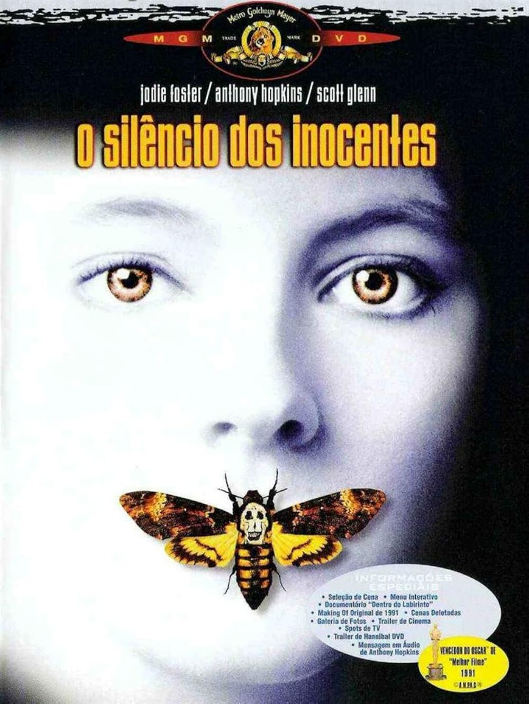

O Silêncio dos Inocentes (1991)

Sinopse: Clarice Starling, uma jovem e promissora agente do FBI, é encarregada de entrevistar o brilhante e perigoso psicopata canibal Dr. Hannibal Lecter. Ela precisa da sua ajuda para traçar o perfil de "Buffalo Bill", um serial killer que rapta e esfolar suas vítimas. Clarice se vê envolvida em um jogo psicológico aterrorizante com Lecter, onde cada pista vem com um preço e um risco mortal.
Diretor: Jonathan Demme
Elenco Principal: Jodie Foster (Clarice Starling), Anthony Hopkins (Dr. Hannibal Lecter), Scott Glenn (Jack Crawford), Ted Levine (Jame Gumb / Buffalo Bill).
Bilheteria Mundial: Aproximadamente US$272.7 milhões
Curiosidades:
- Um dos poucos filmes na história a ganhar os "Big Five" Oscars: Melhor Filme, Melhor Diretor, Melhor Ator, Melhor Atriz e Melhor Roteiro Adaptado.
- A atuação de Anthony Hopkins como Hannibal Lecter é icônica, apesar dele ter apenas cerca de 16 minutos de tempo de tela.
- Jodie Foster fez intensa pesquisa e se encontrou com agentes do FBI para se preparar para o papel de Clarice Starling.
- O filme é adaptado do romance homônimo de Thomas Harris, o segundo livro a apresentar o personagem Hannibal Lecter.
- Foi elogiado por sua atmosfera de suspense psicológico e pela dinâmica complexa entre Clarice e Lecter.